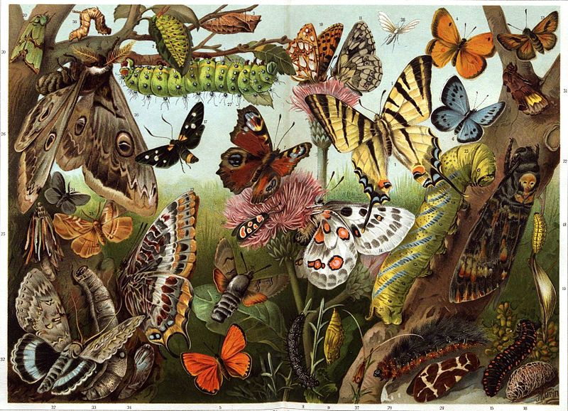
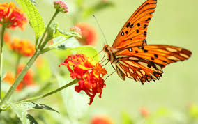
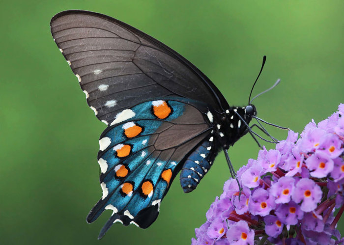

МИР.com
Бабочки и их виды
 Чешуекры́лые, или ба́бочки, мотыльки́, мо́ли (Lepidóptera Linnaeus, 1758; от др.-греч. λεπίς, род. п. λεπίδος — чешуя и πτερόν — крыло), — отряд насекомых с полным превращением, наиболее характерная особенность представителей которого — наличие густого покрова хитиновых чешуек (уплощённых волосков) на передних и задних крыльях (при этом чешуйки расположены как на жилках, так и на крыловой пластинке между ними). Для большинства видов характерен специализированный сосущий ротовой аппарат с хоботком, образованным удлинёнными лопастями нижней челюсти. Форма и размах крыльев весьма разнообразны: от 2 мм[1] до 28 см[2][3].
 Развитие с полным превращением: имеются стадии яйца, личинки (называемой гусеницей), куколки и имаго. Личинка червеобразная, с недоразвитыми брюшными ногами, мощно склеротизованными покровами головы, грызущим ротовым аппаратом и парными шелкоотделительными железами, выделения из которых, при соприкосновении с воздухом, образуют шёлковую нить[4].
Чешуекрылые, ископаемые останки которых известны начиная с юрского периода, в настоящее время являются одним из наиболее богатых видами отрядов насекомых — в отряде насчитывается более 158 000 видов. Представители отряда распространены на всех континентах, за исключением Антарктиды.
Раздел энтомологии, изучающий чешуекрылых, называется лепидоптерологией.
Этимология названия

Латинское название отряда Lepidoptera происходит от др.-греч. λεπίς, род. п. λεπίδος — чешуя и πτερόν — крыло.
Своё название «чешуекрылые» представители отряда получили в связи с тем, что их крылья покрыты чешуйками, представляющими собой видоизменённые щетинки.
Общеупотребительное русское название представителей данного отряда — «бабочка» восходит к праслав. *babъka (< *baba) «старуха, бабка» и представлениям об этих насекомых, как о душах умерших[5][6]. И по сей день во многих сёлах и деревнях их называют «бабуля», «бабушка», «бабучка», «бабурка», «бабка».
«Мотылёк» восходит к праслав. *motyl'ь (ср. чеш. motýl, польск. motyl «бабочка»), которое является производным от *mesti, *motati sę «кружиться, двигаться рывками» из-за особенностей полёта насекомого[7][8].
Слово «моль» происходит от праслав. *molь, которое, по одной версии, является производным от *melti «молоть» (тогда этимологическое значение слова — «дробящее (повреждающее) насекомое»), по другой, связано с др.-греч. μῆλον «мелкий скот», ирл. míl «животное» (с этимологическим значением «мелкое животное»)[9].